There is a direct train from Mumbai to Madurai, which runs only once a week — it departs from Pune every Friday. We booked our reservation on this train from Pune to Tiruchirappalli. An IRCTC room was booked online and we reached Tiruchirappalli on 11th February 2017 around 6 am. After freshening up, we set off to see the temples.
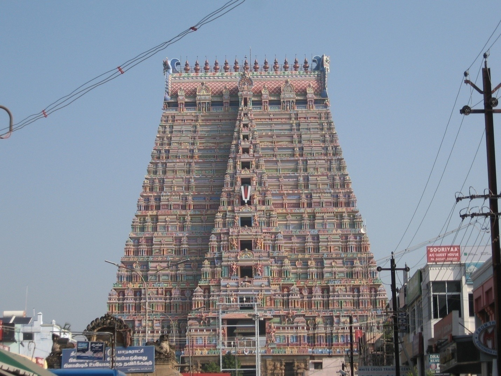
From Tiruchirappalli Junction, many buses run to Srirangam. We took a bus and reached the temple within an hour. There was a big queue and we stood in it after purchasing a ₹50 ticket. Three queues are available: one for free darshan, one for ₹200, and another for ₹50.
After having darshan of Mulavar, Urzavar, Narasimmer, Dhanvanthri, Thayar, and Garudzavar, we left for Samayapuram.
Buses are available from the Chattheram bus stand. We went by bus to this temple. The queue was very long and it appeared we would need to stand for three to four hours. So we decided to skip the darshan, viewed the temple from outside, and returned to our room.
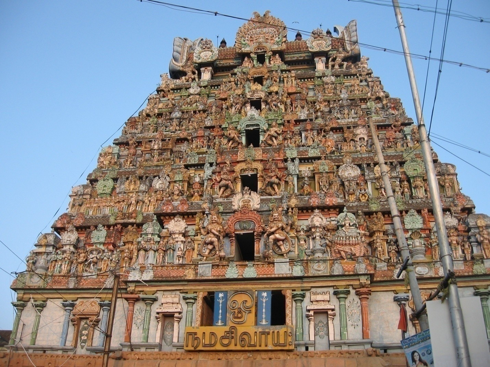
In the evening, we visited Thiruvanikoil. We had darshan of the main deity Jambukeshwarar and Goddess Akilandeswari. This temple is one among the five Panchabootha Sthalams — temples representing the five elements of nature.
After Thiruvanikoil, we went to the Rock Fort Temple and prayed to Lord Ganesh. After going around the Main Guard Gate, we took a bus to Tiruchy Junction and returned to our room.
From Tiruchirappalli, we boarded the Mysore–Myiladuturai Express at 4 am and reached Myiladuturai around 7 am. We had booked a cab driven by Mr. Venu — quite young and very polite.
From Myiladuturai, this place is about an hour's travel by road. This is one of the important Shiva temples of India. Shiva is worshipped here as the Lord of Healing, and the Goddess is called Thyal Nayaki.
This temple is on the way to Mathur from Vaitheeswaran Koil. The Lord here is considered the elder brother of Lord Balaji of Tirupati. Those who have taken a vow for Tirupati Balaji may complete their vow at this temple, as this deity is regarded as His elder brother. This is one among the 108 Divya Desams. The Goddess here is called Alar Mozi Amman.
We reached the temple directly. The temple priest Utharapathy was waiting for us. He had arranged all the pooja materials and garlands. He performed abhishekam to the Ashta Kanika Devis and a pooja to the Muthuveeran deity. After the pooja, we were given prasadam of curd rice. The priest had also planted banana trees in the temple premises and gave us a full bunch of bananas.
From the Muthuveeran temple, we went to the Mariamman temple. After worship there, we visited Mr. Sivakumar, who insisted that we stay for lunch. We spent about an hour with him and then proceeded to Thiruvenkadu.
The Swetaranyeswarar Temple, popularly known as the Budhan Sthalam, is one of the Navagraha temples of Tamil Nadu and is located at Thiruvenkadu near Mayavaram. Thiruvenkadu is about 10 km from Vaitheeswaran Koil and Sirkazhi. The presiding deity is Lord Shiva, known as Venkaatunadar and Sri Swetaranyeswarar. His consort is called Brahma Vidya Nayaki. Budhan (Mercury) is said to have worshipped Lord Shiva at this very temple. The shrine for Budhan is placed outside the shrine of the Goddess.
The Naanmadiya Perumal Temple is situated in the village of Thalaichangadu, near Akkur in Nagapattinam district. The presiding deity is Lord Vishnu. It is one of the Divya Desams — the 108 temples of Vishnu revered by the 12 poet saints, or Alwars.
The Amritaghateswarar Abhirami Temple is dedicated to Shiva in his manifestation as the "Destroyer of Death," and his consort Parvati is worshipped here as Abhirami. It is located in Thirukkadaiyur, 21 km east of Mayiladuthurai. This temple is associated with the legend of Shiva saving his young devotee Markandeya from death, and the tale of the saint Abirami Pattar, a devotee of the presiding goddess.
Sri Pavavimochana Perumal and Sri Bala Subramaniya Swamy Temple is located in Thiruvidaikkazhi near Thillaiyadi, in Nagapattinam district. Both Lord Shiva and Lord Muruga are present in the same Garbhagriha — the sanctum sanctorum. Goddess Deivanai Amman resides separately within the temple.
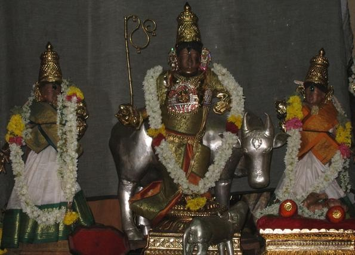
Located just under 30 km south-east of Sirkazhi on the Thirukadaiyur–Tharangambadi NH 45A is the Rajagopalaswamy temple in Ananthamangalam, whose legend dates back to the Ramayana.
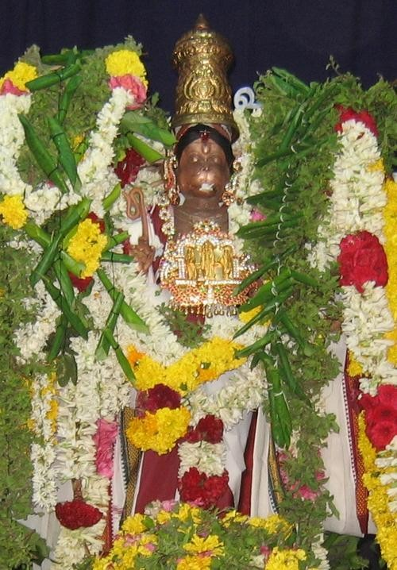
Lord Anjaneya in this temple has three eyes and ten arms holding various armaments. The temple is located adjacent to the Sri Rajagopala Perumal temple and is said to have been built during the period of the Vijayanagara kings. Anjaneya Swami is seen with four arms holding a shankha, chakra, navaneetha, and pasham. The shrine faces north, while Sri Rajagopala Perumal temple faces east. The temple tank in front is known as Hanumar Theertham, and its holy water is believed to cure many illnesses.
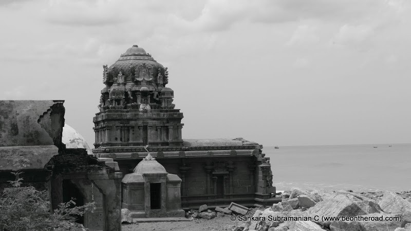
This is the Masilamani Nathar Temple, a 13th-century structure that dates back to the Pandian era. Today, only its ruins stand, ravaged by the vagaries of time and the increasing sea levels. Moreover, this place is dominated by Christians and hardly any Hindus reside here. The temple is totally in ruins and we could not even enter.
The Karaikal Ammaiyar Temple is a Hindu Tamil temple dedicated to Goddess Punithavathi. It is located on Bharathiar Street in the centre of Karaikal. Ammaiyar, or Goddess Punithavathi, is one of the most revered goddesses in Karaikal.
Close to the Karaikal Ammaiyar temple, the Somanathar Shiva temple stands. We visited this temple as well.
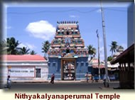
The Nithyakalyana Perumal Temple is one of the three famous temples in the port city of Karaikal, Puducherry. It is close to the Karaikal Ammaiyar Temple, with the Chandra Theertham temple tank separating the two — a tank shared by both temples. Perumal is in the posture of Anantha Sayanam.
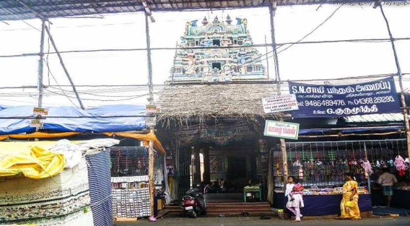
Sri Kailasanathar Temple is a famous Hindu temple situated in Karaikal, opposite to Sri Karaikal Ammaiyar Temple. It is dedicated to Lord Shiva and is believed to be around 2,000 years old. In the 8th century, this temple was reconstructed by the Pallava rulers. During the period of French rule, a part of the temple was again reconstructed. This temple is dedicated to Lord Shiva and Goddess Sri Soundrambal, and has four elaborate doorways as its biggest attraction. The entrance to the Subramaniar shrine faces west.
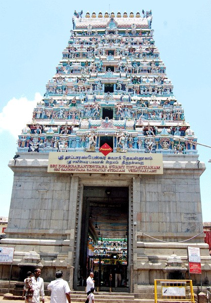
Thirunallar is a small town in Karaikal, within the Union Territory of Puducherry. It is most noted for the shrine of Lord Sani (Saturn), the Tirunallar Saniswaran Temple, which lies within the temple dedicated to Lord Darbharanyeswaran, a form of Lord Shiva. There is also a "Thristy Ganapathi" opposite this temple — people generally break a coconut here before proceeding to the Saneswaran temple.
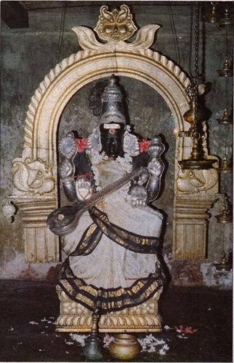
Sri Saraswathi Temple, located in Koothanur in Thiruvarur District, is a famous Hindu temple dedicated to Goddess Sri Saraswathi. It is said that this place was known as "Ambalpuri" about a thousand years ago, even before the poet Ottakoothan was born.
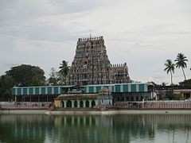
The Neela Megha Perumal Temple, also known as Sowriraja Perumal Temple, is located in Thirukannapuram, a village in the outskirts of Nagapattinam. Constructed in the Dravidian style of architecture, the temple is glorified in the Divya Prabandha. It is one of the 108 Divyadesams dedicated to Vishnu, who is worshipped as Neelamegha Perumal. As per legend, the presiding deity is believed to have appeared wearing a wig (called sowri locally) to save a devotee — hence the name Sowrirajan.
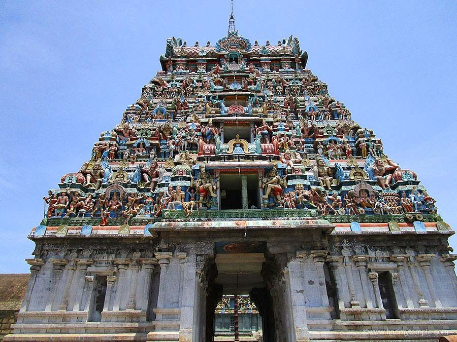
The main deities of this temple are Agneeswarar, Saranyapureeswarar, and Konapiran. The Goddess is Soolikambal, also known as Karuthazhkuzhali. This temple is very famous for Vasthu Pooja — people come here to perform the puja before constructing a new home.
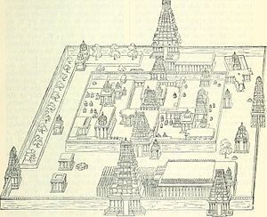
The Thyagaraja Temple is a Shaiva temple dedicated to the deity Shiva, located in the town of Thiruvarur in Tamil Nadu. Shiva is worshipped here as Moolanathar, represented by a lingam. Daily poojas are offered to his idol referred to as the Maragatha Lingam. His consort Parvati is depicted as Kondi. The presiding deity is revered in the 7th-century Tamil Shaiva canonical work, the Tevaram, written by the saint poets known as the Nayanmars, and is classified as a Paadal Petra Sthalam.
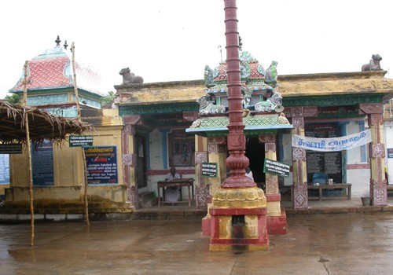
The Saniswaran here is called "Pongu Sani." Legend says that Saniswaran took a holy dip in the Agni Theertham and prayed to Agneeswarar — the name of Lord Shiva at Thirukollikaadu — to grant him the wish that everyone would worship him too. Lord Shiva gave him darshan and asked him to reside in the temple as Pongu Sani. It is believed that whoever worships here is relieved of their difficult periods of Sani dosha and is blessed. King Nala Maharaja, who was relieved of his Sani dosha after worshipping at Tirunallar, is said to have regained his wife, children, kingdom, and all his wealth after worshipping at this place. King Harichandra too is said to have been relieved of his dosha by the grace of Kollikadu Sani Bhagavan.
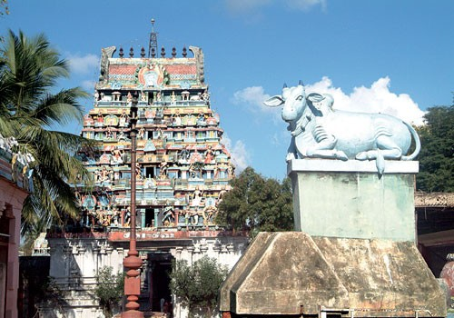
Sri Piravi Marundeeswarar Temple is in Thiruthuraipoondi near Thiruvarur district. The presiding deity here is Lord Shiva in the form of Gajasamhara Murthy — killing a demon — which is an allegory of Lord Shiva annihilating arrogance, pride, and jealousy from the hearts of devotees. It is believed that if people offer prayers on full moon and new moon days, they will have a prosperous life free of sorrows.
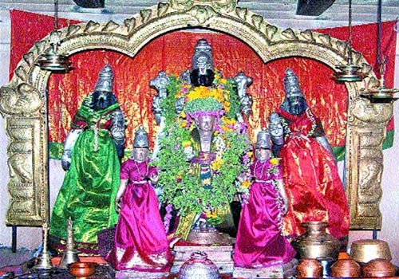
The notable feature of this temple is the impressive 16-foot-tall Sri Anjaneya gracing the premises.
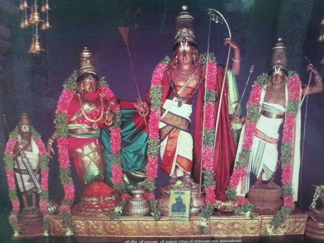
This is the Sri Kodhandaramaswamy Temple located in Thillivilagam, Thiruvarur district — a wonderful kshetram where Lord Rama has made his abode. About 150 years ago, when a pond was being excavated, five-foot-tall Panchaloha idols of Sri Rama along with Sri Seetha Devi emerged from the ground as Swayambhuvas — self-manifested deities. This is the rare kshetram where the Moolavar himself is a Panchaloha vigraha.
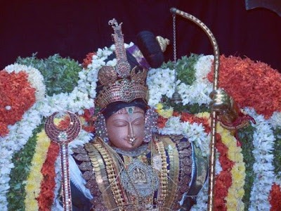
Located 14 km west of Mannargudi is the Sri Kothandaramar temple at Vaduvur. This is one of the Abhimana Kshetrams of Lord Vishnu, also called the Vakulaaranya Kshetram. The main deity, Sri Kodhandaramar, along with Sri Seetha Piratti, Lakshmanan, and Hanuman, appears in the Thirukalyana kolam posture. The original deity here is Sri Gopalan with Goddesses Rukmini and Satyabhama. The sacred tree of this place is the Vagula maram (maghizham tree).
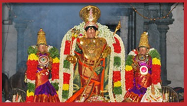
The Rajagopalaswamy temple is a major Vaishnavite shrine located in the town of Mannargudi. The presiding deity is Rajagopalaswamy, a form of Lord Krishna. The temple is spread over an area of 23 acres and is one of the most important Vaishnavite shrines in India. It is called Dakshina Dwarka — the Southern Dwarka — along with Guruvayoor, by Hindus.
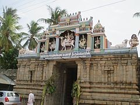
Lord Shiva here is a Swayambumurthy in this Mada temple. The rays of the sun fall on the Lord for three days during the Panguni month (March–April) — a very special and rare feature of this temple.
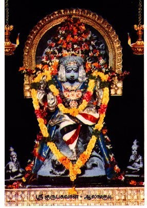
The presiding deity here is Abathasahayeswarar and the Goddess is Umayami. The Shivalingam is a Swayambhu. Dakshinamurthy is in the prakaram. Shiva's shrine is worshipped here as Guru Bhagavan.
Similar to the famous Nanganallur Anjaneyar in Chennai, a 32-foot Anjaneyar temple is under construction here, with the idol of God Hanuman carved from a single rock. The 32-foot idol of Sri Anjaneya is believed to have special healing powers. The Viswaroopa Anjaneyar, along with Sri Rama and Sri Narasimha Temple, is also in the same premises. This Anjaneyar is called "Sangatakara Mangala Maruthu" and is said to have a Muligai (medicinal herb) in his body to cure diseases. It is told by one of the persons there that this temple was constructed by Kingfisher Airlines promoter Vijay Mallya.
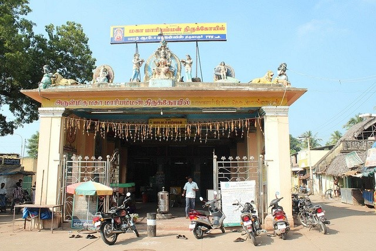
This is the famous Mariamman temple in Valangaiman, close to Thiruvarur.

The Koneswarar Temple is a Hindu temple in the town of Kudavasal in Tiruvarur district. The presiding deity is Lord Shiva.
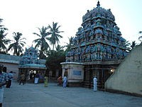
The Engan Murugan Temple is a temple dedicated to the Hindu god Murugan, situated in the village of Engan in the Thiruvarur District. It is a popular destination, located 13 kilometres from Thiruvarur.
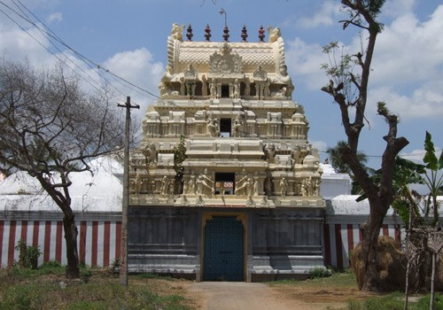
The Abhi Mukteeswarar temple at Manakkal was praised by Appar in his Devaram verses. As per a 12th-century AD inscription at the temple, this place once flourished with vibrant Mada streets, great wealth, prosperous temple lands, and a happy community living here in Shaivite-Vaishnavite harmony.
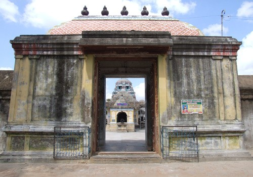
This temple is about 1,000 years old.
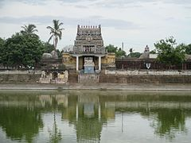
The Bhaktavatsala Perumal Temple is dedicated to Lord Vishnu and is located in Thirukannamangai, a village in Tiruvarur district. Constructed in the Dravidian style of architecture, it is glorified in the Divya Prabandha and is counted among the 108 Divya Desams. Vishnu is worshipped here as Bhaktavatsala Perumal, and his consort Lakshmi as Kannamangai Nayagi.
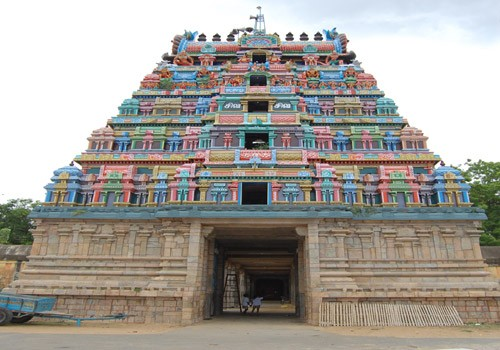
This temple is about 1,000 years old.
Close to the Perumal temple, there is also a Sai Baba mandir. We visited this temple as well.
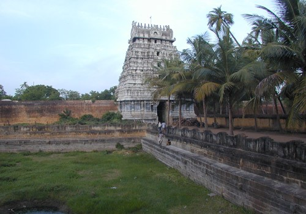
Lord Valanchuzhi Nathar is a Swayambumurthy. The Vinayaka idol here is made of the foam of the Milk Ocean (Tiru Parkadal), and is hence praised as Swetha Vinayaka — Vellai Vinayaka. Vellai in Tamil means white.
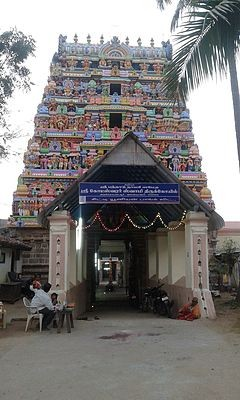
The Kottaiyur Kodeeswarar Temple is a Hindu temple dedicated to Shiva, located in Kottaiyur, a village in the outskirts of Kumbakonam in Thanjavur district. Shiva is worshipped as Koteeswarar and his consort Parvati as Pandhadu Nayaki. Koteeswarar is revered in the 7th-century Tamil Shaiva canonical work, the Tevaram, and is classified as a Paadal Petra Sthalam — one of the 275 temples revered in the canon.
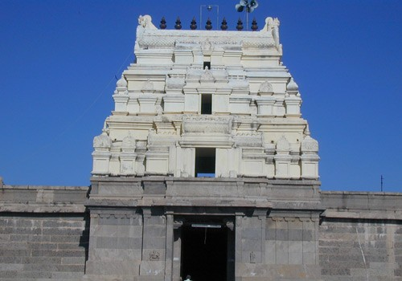
The Vasishteswarar Temple is situated in the village "Thittai" near Thanjavur. As the village is situated south of the Cauvery river, it is also called Thenkudi Thittai. The presiding deity is Swayambootheswarar and the Goddess is Ulaganayaki. The main deity is also called Vasishteswarar as he was worshipped here by Saint Vasishtar.
The Bangaru Kamakshi temple is located in the West Main Street, called Mela Masi Veethi. As the idol of Kamakshi is made of gold, this temple is named Bangaru Kamakshi temple.
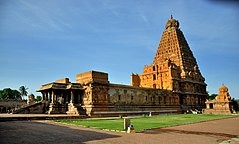
The Brihadeeswarar Temple, locally known as the "Big Temple," is a Hindu temple dedicated to Lord Shiva, located in Thanjavur. It is also known as the RajaRajeswara Temple and Peruvudayar Temple. It is one of the largest temples in India and is a supreme example of Dravidian architecture during the Chola period. Built by Raja Raja Chola I and completed in 1010 CE, the temple turned 1,000 years old at the time of our visit. The temple is part of the UNESCO World Heritage Site known as the "Great Living Chola Temples."
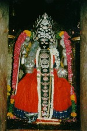
The Punnai Nallur Mariamman Temple is a Hindu temple located in the outskirts of Thanjavur. The temple of Goddess Mariamman is one of the most famous temples in the Thanjavur district.
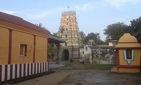
The Jakath Rakshaka Perumal Temple, also known as Thirukoodalur or locally as Aduthurai Perumal Temple, is in Vadakurangaduthurai, a village near Kumbakonam. It is dedicated to Lord Vishnu, constructed in the Dravidian style, and is one of the 108 Divyadesams. Vishnu is worshipped here as Jakath Rakshaka and his consort Lakshmi as Padmasanavalli.
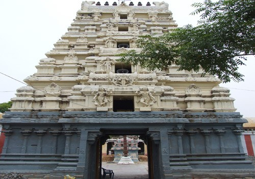
The Dayanidheeswarar temple is located at Vadakurangaduthurai. The Lord of this temple is a Swayambhu Lingam. He is also known by different names: Dayanidheeswarar, Kulaivanangunathar, and Vaaleeswarar.
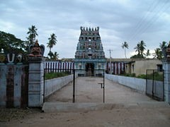
The Kolavalvil Ramar Temple is a Hindu temple dedicated to Lord Vishnu, located 19 km from Kumbakonam on the Kumbakonam–Chennai highway. It is one of the 108 Divyadesams dedicated to Vishnu, who is worshipped here as Kola Valvill Ramar, and his consort Lakshmi as Maragathavalli.
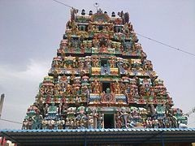
The Parimala Ranganathar Perumal Temple, or Tiruindaloor, is a Hindu temple dedicated to Vishnu, located in Thiruvilandur of Mayiladuthurai. It is one of the Divya Desams and is also one of the Pancharanga Kshetrams, situated along the river Kaveri.
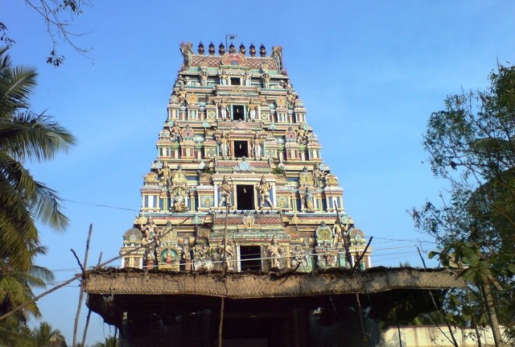
The main deity is called Lord Vada Aaranyeswarar in Sanskrit and popularly known as Vallalar — He faces west, with Goddess Gnanambika. This temple is situated on the bank of the river Cauvery, with the beautiful Rishaba Mandapam in the middle of the majestic river. Since the Lord grants knowledge, wealth, and health, he is known as Vallalar.
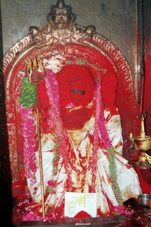
This temple is on the outskirts of the city of Chidambaram. Legend says that Goddess Kaali Devi moved here after losing to Lord Shiva in the celestial dance contest.
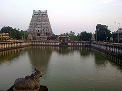
The Thillai Natarajar Temple in Chidambaram is a Hindu temple dedicated to Lord Shiva. It is known as one of the foremost of all temples (Kovil) in Shaivism and has influenced worship, architecture, sculpture, and performance art for over two millennia. It is also famous for the annual Natyanjali dance festival held on Maha Shivaratri.
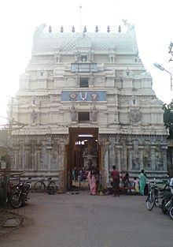
Sri Thiruvikrama Perumal Temple, also known as Thadalan Kovil, is situated in Sirkazhi, Nagapattinam district. It is one of the 108 Divya Desam Temples dedicated to Lord Vishnu, also known as Thiru Kazhee Seerama Vinnagaram.
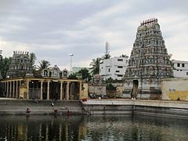
The Sattainathar Temple in Sirkazhi, also called Brahmapureeswarar Temple or Thoniappar Temple, is a Hindu temple dedicated to Shiva. After visiting this temple, we proceeded to Mayiladuthurai and from there returned to Tiruchy, where we stayed at the IRCTC room booked in advance.
On the morning of the 17th, we took a bus from Tiruchy to Namakkal.
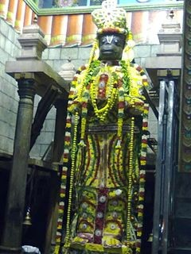
The Namakkal Anjaneyar Temple is located in Namakkal town and is dedicated to the Hindu god Hanuman. It is constructed in the Dravidian style of architecture. The legend of the temple is associated with Narasimha, an avatar of Lord Vishnu, appearing for Hanuman and Lakshmi. The image of Anjaneyar is 18 feet tall, making it one of the tallest images of Hanuman in India.
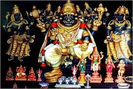
The Narasimhaswamy Temple in Namakkal is dedicated to the Hindu god Narasimha, an avatar of Vishnu. Constructed in the Dravidian style of architecture and in rock-cut architecture, the temple is located on the Salem–Namakkal–Trichy Road. The legend of the temple is associated with Narasimha appearing for Lakshmi, his consort, and for Hanuman. Based on architectural features, historians believe the temple was built during the 8th century.
This seven-day pilgrimage through the temple heartland of Tamil Nadu and Puducherry was nothing short of extraordinary. Spanning the districts of Tiruchirappalli, Nagapattinam, Karaikal, Thiruvarur, Thanjavur, Cuddalore, and Namakkal, the journey touched 58 temples — from ancient Swayambhu lingams and UNESCO World Heritage sites to modest village shrines and ruined Pandian-era structures standing quietly against the sea.
Whether it was the spiritual calm of Vaitheeswaran Koil, the grandeur of Brihadeeswarar, the devotion-laden crowds of Thirunallar Saneswaran, or the personal warmth of temple priests like Utharapathy at Mathur — each stop carried its own grace. The tireless driving of Mr. Venu made it possible to cover this vast spiritual geography with patience, safety, and cheer.
For the devoted pilgrim, Tamil Nadu's temple trails offer an unmatched richness: towering gopurams, sacred river banks, Divya Desams, Navagraha shrines, and centuries of living tradition — all within a single journey.